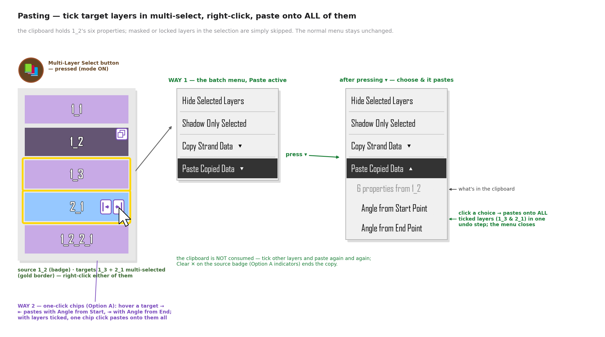
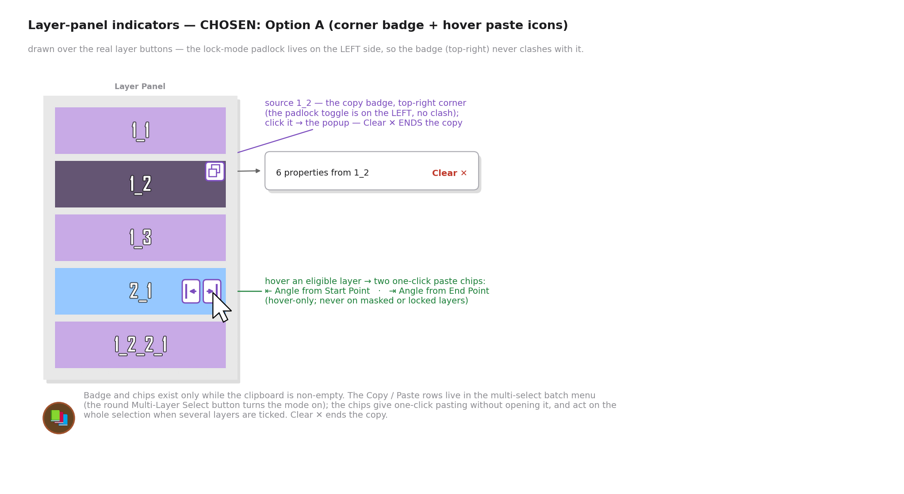
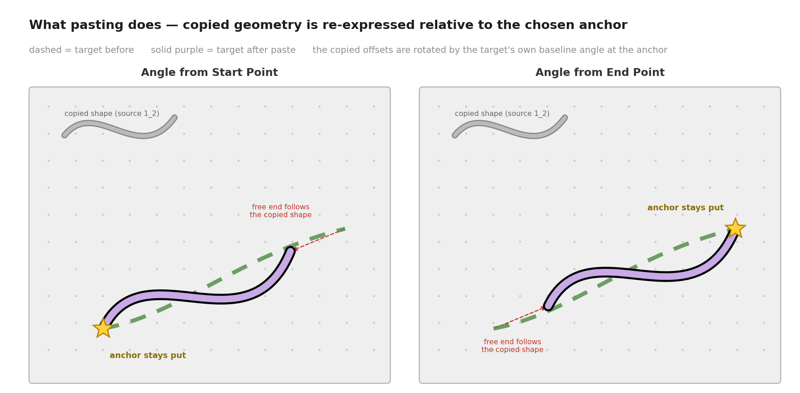
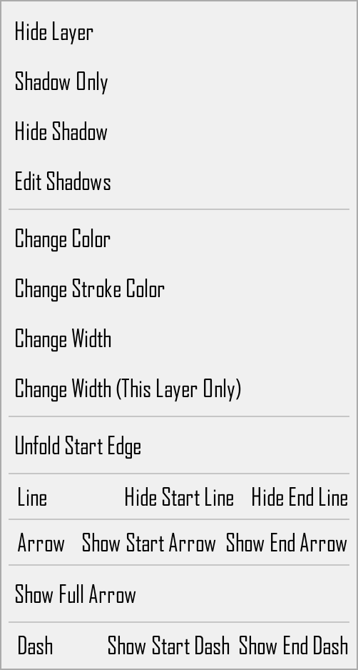
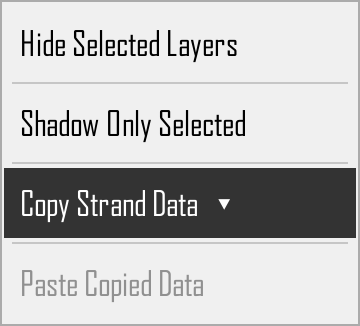
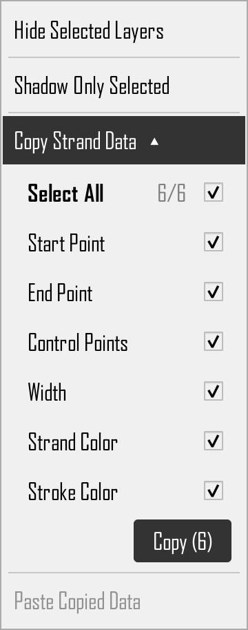
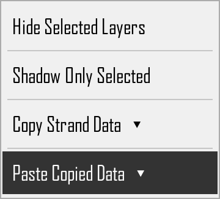
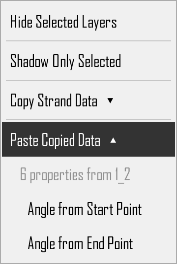
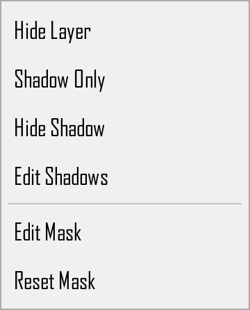
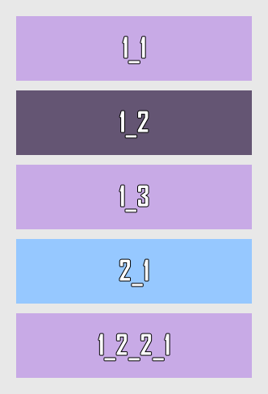

Copy / Paste Strand Data
Product concept for OpenStrand Studio — a selective copy dropdown on the numbered layer button, and an angle-aware paste onto other layers via the layer panel.
The UI in the mockups is the app's real UI: tools/render_ui_qt.py runs the
actual NumberedLayerButton.show_context_menu code path offscreen with real
Strand / MaskedStrand objects and screenshots the menus it builds;
the proposed additions are built from the app's own HoverLabel class, exact menu
stylesheet, and the same embedded-widget pattern as the existing Arrow Customization block.
The raw UI captures live in mockups/qt/ (gallery at the bottom of this page).
Summary
Copy/paste strand data lives in the layer panel's multi-select mode (entered with the round Multi-Layer Select button). Right-clicking a ticked layer there already shows the small batch menu — Hide Selected Layers / Shadow Only Selected — and the proposal appends two dropdown rows to it: Copy Strand Data ▾ and Paste Copied Data ▾. The normal-mode right-click menu is completely untouched.
Copy Strand Data ▾ lets the user pick exactly which pieces of the right-clicked strand to copy — kept deliberately to the six essentials: Start Point, End Point, Control Points (curve shape incl. bias), Width (incl. stroke width), Strand Color and Stroke Color. Pressing the dropdown arrow expands the panel of toggles (with a Select All master toggle) inline in the menu, in the same style as the existing Arrow Customization panel; until then no detail toggles are visible.
After copying, tick any number of target layers (regular or attached strands — masked layers are skipped), right-click one of them and expand Paste Copied Data ▾. It reveals two placement choices — clicking one pastes onto all ticked layers at once (a single undo step) and closes the menu, and the clipboard survives for further pastes until the next Copy:
- Angle from Start Point — the copied geometry is re-anchored at the target's start point and rotated to the target's own baseline angle measured from its start.
- Angle from End Point — same, but anchored and angle-matched at the target's end point.
Non-geometric properties (colors, widths…) are simply applied as-is. While a copy is active, the layer panel shows it (chosen design Option A): a copy badge on the source layer's button, hover ⇤ / ⇥ one-click paste chips on eligible layers, and Clear ✕ on the badge to finish the copy.

Copy Strand Data ▾ on the source layer, tick the target layers, then Paste ▾ with an anchor choice pastes onto all of them; the clipboard survives for repeated pastes.1.What can be copied
The panel deliberately stays short — just the six essentials, the things you reach
for when making one strand look like another. Every toggle maps to real strand attributes
(src/strand.py), and the set mirrors what the app already saves to JSON
(serialize_strand, src/save_load_manager.py:109) and what group duplication
already copies in memory (GroupPanel.copy_strand_properties, src/group_layers.py:3217).

| Toggle (panel label) | Strand attributes | Geometric? |
|---|---|---|
| Start Point | start | yes |
| End Point | end | yes |
| Control Points | control_point1, control_point_center (+ control_point_center_locked, triangle_has_moved), control_point2 (+ control_point2_shown, control_point2_activated), bias_control.triangle_bias, .circle_bias, .triangle_position, .circle_position | points yes, bias values no |
| Width | width, stroke_width | no |
| Strand Color | color | no |
| Stroke Color | stroke_color | no |
- Angle needs no toggle — a strand's baseline angle is defined by its endpoints, and pasting re-applies it through the anchor choice (section 4). Copying Start/End carries the angle with it.
- Control Points is one toggle covering all three control points and the bias controls — users think "the curve's shape", not five separate handles.
- All six toggles are on by default; the last-used state is remembered for the session.
- Everything else the app can serialize (shadow color, circle stroke colors, arrow settings, line & dash visibility, end caps, curve tuning) is deliberately not in the v1 panel — see section 7 for a possible "Advanced…" expansion.
The "Geometric?" column matters at paste time: only geometric values go through the anchor + rotation mapping (section 4); everything else is assigned directly.
2.Copying — the multi-select context menu
Copy/paste lives in the layer panel's multi-select mode, entered by pressing the
round Multi-Layer Select button (the circular tan/brown 40×40 button above the
layer list — src/layer_panel.py:700-744, icons multi_select_on/off.png).
Right-clicking a ticked layer in this mode already shows a small batch menu with
two entries — Hide Selected Layers and Shadow Only Selected
(show_multi_select_context_menu, src/layer_panel.py:1914). The proposal
appends two dropdown rows after them:
- Copy Strand Data ▾ — a dropdown row, collapsed by default
- Paste Copied Data ▾ — dimmed while the clipboard is empty (section 3)
The normal-mode menu is completely untouched — Copy/Paste Strand Data is
not added to the regular right-click menu of a layer button (which multi-select
mode suppresses anyway, src/numbered_layer_button.py:202).
The flow: press the Multi-Layer Select button, tick and right-click the source layer, press the ▾ — the six-essential toggle panel expands inline (embedded exactly like the Arrow Customization block); pressing again collapses it back to the single row. The mockup shows the round button ON, the batch menu as it opens — collapsed, the same menu after pressing ▾ — expanded, and (below) today's normal-mode menu, unchanged, for reference:

Behavior details
- Collapsed by default: opening the menu shows the
Copy Strand Data ▾row collapsed (aHoverLabelrow with a dropdown arrow on its trailing side). Clicking the row toggles the panel open/closed — the same expand-inside-the-menu behavior the Arrow Customization block uses whenShow Full Arrowis enabled. The menu stays open while expanding/collapsing. - The expanded/collapsed state resets to collapsed every time the menu is opened.
- Select All is a tri-state master toggle, exactly like the global-toggle rows already
used in the Group Shadow editor (
src/group_shadow_editor_dialog.py:283-298): clicking it while mixed selects everything; clicking again clears everything; it shows the indeterminate mark while only some toggles are on. - The panel is embedded in the context menu the same way the existing Arrow
Customization block is (a
QWidgetActionholding aQWidgetwith aQVBoxLayoutof label-left / control-right rows, panel background#F0F0F0light /#333333dark,border-radius: 5px—src/numbered_layer_button.py:617-769), so it inherits the app's menu look-and-feel, theming, and Hebrew RTL handling for free. - The Copy (N) button sits at the bottom of the expanded panel; it snapshots the selected values into an in-memory clipboard and closes the menu. The button is disabled when nothing is selected.
- Copy always takes from the layer you right-clicked, even when several layers are ticked — the tick marks matter for pasting (section 3), not for copying.
- Copy is offered on regular strands and attached strands. For masked layers the
copy row is dimmed in v1 (same
isinstance(strand, MaskedStrand)gate the normal menu already uses — they have no control points and their geometry is derived from the two masked layers,src/masked_strand.py).
Clipboard model
- One application-level clipboard slot (e.g.
canvas.strand_clipboard), overwritten by the next copy. It stores plain data — freshQPointF/QColorcopies plus floats and bools, never live object references (the same rulecopy_strand_propertiesfollows; Qt objects must not bedeepcopy-ed). - The snapshot also records the source's
layer_name(for the "Clipboard: N properties from 1_2" hint) and the source's start→end baseline angles needed for pasting. - Because it is a snapshot, deleting or editing the source strand afterwards does not affect what will be pasted. The clipboard lives for the session; persisting it into the saved project file is a possible follow-up (section 7).
3.Pasting — tick targets in multi-select, paste onto all of them
With something in the clipboard there are two ways to paste, both acting on the ticked (gold-bordered) layers:
Way 1 — the batch menu. Tick any number of target layers, right-click one of them, and press the ▾ on the now-active Paste Copied Data ▾ row — it expands inline to show the dimmed clipboard hint ("6 properties from 1_2") and the two anchor choices — Angle from Start Point / Angle from End Point. Clicking a choice pastes onto every ticked eligible layer at once — a single undo step — and closes the menu.
Way 2 — the one-click ⇤ / ⇥ chips (part of the Option A indicators below): hovering an eligible layer shows two small chips on the button itself — ⇤ pastes with Angle from Start Point, ⇥ with Angle from End Point — one click, no menu. With layers ticked, one chip click pastes onto all of them; on an unticked layer it pastes onto that layer alone.

Paste Copied Data ▾ → anchor choice. Way 2: the hover ⇤ / ⇥ chips paste in one click. Both paste onto all ticked layers in one undo step.- The paste targets are the ticked layers — one tick = a single-layer paste, many ticks = a batch paste, same gesture. The layer you happened to right-click is not special.
- The menu rows use the app's
HoverLabel+ exact menu stylesheet; the dimmed clipboard hint row is a non-interactive label, like the disabled-look rows elsewhere. - Eligible targets:
StrandandAttachedStrand. Masked and locked layers in the selection are simply skipped (sameisinstance(strand, MaskedStrand)gate the normal menu uses atsrc/numbered_layer_button.py:217, and the usual locked-layer rule). - The menu lives only in the layer panel's multi-select mode: the normal-mode right-click menu and the canvas are both unchanged.
- The paste row is dimmed when the clipboard is empty. Ticking the source layer itself is allowed (pasting onto the source is harmless — it re-applies the data).
- Pasting does not consume the clipboard. After one paste you can tick other layers and paste again — as many rounds as you like, mixing the two anchor choices freely. The snapshot is replaced only when you press Copy again on some strand (there is exactly one clipboard slot, section 2).
Layer-panel indicators & ending a copy — chosen: Option A
Decision: Option A — corner badge + hover paste chips. While the clipboard is non-empty, the layer panel shows it directly on the buttons:

- The source layer carries a small copy badge in its top-right corner. The
lock-mode padlock is vertically centred on the left (
lock_button_rect,src/numbered_layer_button.py:1120), so badge and padlock never clash — lock mode and copy state can show at the same time. - Clicking the badge opens a tiny popup — "6 properties from 1_2 · Clear ✕". Clear ✕ is how a copy is finished: it empties the clipboard slot and removes the badge and every paste chip.
- The hover ⇤ / ⇥ paste chips are paste way 2, described above — hover-only, never on masked or locked layers, and acting on the whole tick selection.
- Badge, popup and chips exist only while the clipboard is non-empty; both paste ways keep working side by side.
Considered alternatives (not chosen)
- Option B — "Paste mode": a lock-mode-style panel mode with a "Pasting from 1_2 — Done" banner and big ⇤ / ⇥ half-buttons on every eligible layer. Most discoverable, but modal — the buttons' normal actions would be unavailable until Done.
- Option C — clipboard bar: a bar docked in the multi-select strip with batch ⇤ / ⇥ Paste buttons and a ✕. Its batch-pasting benefit is kept anyway — the multi-select right-click paste above covers it — without adding a new bar.
4.Paste semantics — "angle from start" vs "angle from end"
Style properties (widths, colors, arrows, visibility…) are assigned directly. Geometry is mapped through the chosen anchor:

Definition (rotation + translation, no scaling — copied distances are preserved):
source frame: origin A_s = source.start (or source.end for "from end")
angle θ_s = atan2(other_end − A_s) # source baseline angle
target frame: origin A_t = target.start (or target.end)
angle θ_t = atan2(other_end − A_t) # target baseline angle
Δθ = θ_t − θ_s
pasted(P) = A_t + R(Δθ) · (P − A_s) for every copied geometric point P
R(Δθ) is the 2-D rotation matrix; the angle math is the same
math.degrees(math.atan2(dy, dx)) used by AngleAdjustMode.calculate_angle
(src/angle_adjust_mode.py:632-635), and the point rotation is the same operation as
rotate_point_around_pivot (src/angle_adjust_mode.py:402).
Consequences the user should expect:
- The anchor point stays put (star in the mockup). The strand's other end moves to wherever the copied shape puts it — if the source was longer, the target becomes longer.
- The copied curve keeps its shape but is rotated so it "flows" along the target's own direction at the anchor.
- Pasting with Angle from End Point mirrors the flow: offsets are measured from the source's end and re-applied from the target's end.
Interaction between toggles at paste time
| Clipboard contents | Effect on target |
|---|---|
| Both endpoints + control points | Full shape replacement, anchored & rotated as above. |
| Control points only (endpoints not copied) | Target keeps both of its endpoints; the copied control-point offsets (from the source anchor, rotated by Δθ) are applied, reshaping the curve between the existing endpoints. |
| Endpoints only | Target becomes the copied baseline (anchored/rotated); its control points are re-derived the way the app does for a fresh strand. |
| Control Points — bias parts | Bias values (triangle_bias, circle_bias) copy as-is; bias positions go through the anchor mapping like any other point. |
| Only non-geometric toggles | Anchor choice is irrelevant; both choices apply the same result (the expanded dropdown may then show a single "Paste" action instead of two). |
Attached-strand targets
An AttachedStrand's start is glued to its parent (it stores angle + length and
recomputes end from them, src/attached_strand.py:34-35, 310-313), so:
- The Start Point toggle is ignored for attached targets — the start cannot leave the parent. "Angle from Start Point" therefore behaves most naturally for them.
- After pasting, the attached strand's
angle/lengthare recomputed from the new geometry (atan2, as insrc/attached_strand.py:328-330) so later parent moves keep working correctly. - Strands attached to the target stay attached: after the paste the usual
attachment/knot update path runs so children follow the moved end, exactly as they do
after an angle-adjust rotation (
rotate_attached_strand,src/angle_adjust_mode.py:494).
Undo / redo
One paste = one undo step (a single state snapshot through the existing undo/redo manager), regardless of how many properties were applied. A multi-select paste onto N layers is likewise a single undo step. Copying is not an undoable action (it changes no document state).
5.Edge cases & rules
- Masked layers (
MaskedStrand): no copy entry, no paste entry (v1). Their geometry is derived from the two strands they mask and they have no control points. - Hidden / locked layers: copying from a hidden strand is allowed (data is data); pasting onto a locked layer is blocked with the usual locked-layer feedback.
- Empty clipboard: paste entries are hidden (or shown disabled with a hint).
- Degenerate baseline: if a strand's start and end coincide, its baseline angle is undefined — fall back to Δθ = 0 (translation only) and log it.
control_point2_shown/control_point2_activated/triangle_has_movedtravel with the Control Points toggle so the pasted curve renders exactly like the source (these flags gate how the app draws/uses the points).- Bias positions of
None(never dragged): copy theNone; the app will lay the bias controls out on the new curve as it does for a fresh strand. - Knot/attachment bookkeeping is never copied:
layer_name,set_number,attached_strands,knot_connections,attachment_side, parent references stay untouched — pasting restyles/reshapes the target, it never rewires the diagram (the same exclusionscopy_strand_propertiesandserialize_strandmake).
6.Translations
New strings needed (added to src/translations.py, which already has select_all /
deselect_all entries): "Copy Strand Data", "Paste Copied Data", "Angle from Start
Point", "Angle from End Point", "Select All", the six toggle labels, and the clipboard
hint ("N properties from X") — plus the Option A indicator strings: "Clear" for the
badge popup (the ⇤ / ⇥ chip tooltips reuse the two anchor strings). RTL layouts follow
the existing menu handling.
7.Open questions / future ideas (not in v1)
- Fit mode: an optional scaling variant that also scales copied offsets so the free end lands exactly on the target's old end (shape adapts to the target's length).
- Persist the clipboard in the project JSON so copy/paste survives restarts.
- Named presets: save a toggle combination ("colors only", "shape only") for reuse.
- Copy from masked layers (styles only — colors/widths — since geometry is derived).
- Advanced… expander: a second, collapsed "Advanced" section in the panel exposing the rest of the serializable attributes — shadow color, circle stroke colors, arrow settings, line & dash visibility, end caps, curve tuning.
(Pasting onto multiple selected strands, previously listed here, is now part of v1 via the multi-select paste in section 3.)
8.Implementation pointers (for the eventual code change)
| Concern | Existing precedent |
|---|---|
| Multi-select batch menu (the new home of copy/paste) | show_multi_select_context_menu (src/layer_panel.py:1914) — the existing Hide/Shadow-Only menu the rows are appended to; the round Multi-Layer Select button (src/layer_panel.py:700-744) |
| Menu rows + embedded toggle panel | HoverLabel rows + menu stylesheet (src/numbered_layer_button.py:243-286); Arrow Customization QWidgetAction panel (:617+) with QComboBox/QCheckBox |
| Masked-layer gating | isinstance(strand, MaskedStrand) branch (src/numbered_layer_button.py:217, 350, 386) |
| Select-All master toggle | GroupShadowEditorDialog._toggle_all_* (src/group_shadow_editor_dialog.py:283-398) |
Property snapshot / apply without deepcopy | GroupPanel.copy_strand_properties (src/group_layers.py:3217-3359) — builds fresh QPointF/QColor |
| Canonical field list | serialize_strand (src/save_load_manager.py:109-268) |
| Angle math & point rotation | AngleAdjustMode.calculate_angle (src/angle_adjust_mode.py:632), rotate_point_around_pivot (:402), rotate_attached_strand (:494) |
| Attached-strand angle/length refresh | src/attached_strand.py:310-313, 328-330 |
| Layer-panel indicators (Option A badge + hover chips) | lock-mode padlock toggle & its placement/hit-testing (lock_button_rect, src/numbered_layer_button.py:1120); multi_select_mode on the layer panel; icon PNGs go in src/layer_panel_icons/ (packaging convention) |
Raw UI captures (mockups/qt)
These are the untouched screenshots taken by tools/render_ui_qt.py from the app's real
widgets — the building blocks the annotated figures above are composited from.


Copy Strand Data ▾ collapsed, Paste dimmed (nothing copied yet).

Paste Copied Data ▾ active, collapsed.


Regenerating the mockups
pip install matplotlib PyQt5 cd docs/copy_paste_strand_data/tools QT_QPA_PLATFORM=offscreen python3 render_ui_qt.py # real-widget UI captures -> ../mockups/qt/*.png python3 generate_mockups.py # composite figures -> ../mockups/*.png
tools/render_ui_qt.py— drives the app's realNumberedLayerButton.show_context_menuoffscreen (with realStrand/MaskedStrandobjects) and screenshots the resulting menus, the real layer buttons, and the proposed entries built from the app's ownHoverLabel/stylesheet. Because the offscreen platform's virtual screen is tiny, QMenu popups reflow into columns, so the captured rows are re-hosted one-to-one in a menu-styled frame before grabbing.tools/generate_mockups.py+tools/mockup_common.py— composite those captures into the annotated figures and draw the geometry diagrams.